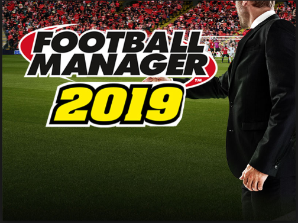
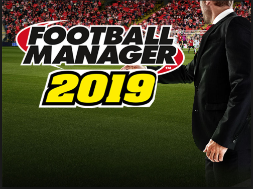

Here you can download my CVdownload
All about me
My name is Ayeah Tita Boris,i'm 21 years odl.
I study computer science at Efrei Paris
and now i am in poland for 4 months to increase my level.
This Home work will help me to increase my level in web programming.
My hobbies
- Playing Football
- Playing video games
- Trip
Playing Football
I started play football since my childhood
I never stop play football again and at school i study ,i integrate the football team.
My favorite Football team is Fc Barcelone
Top five of my favorite video games
- Football Manager
- Fifa
- PES
- PUBG
- Resindence Evil
All about Football manager
Football Manager is a series of football management video games developed by Sports Interactive.
He took over, in 2004, Championship Manager series.
On November 10, 2017 comes out the 14th version of the series, Football Manager 2018.
Each opus sells around a million copies